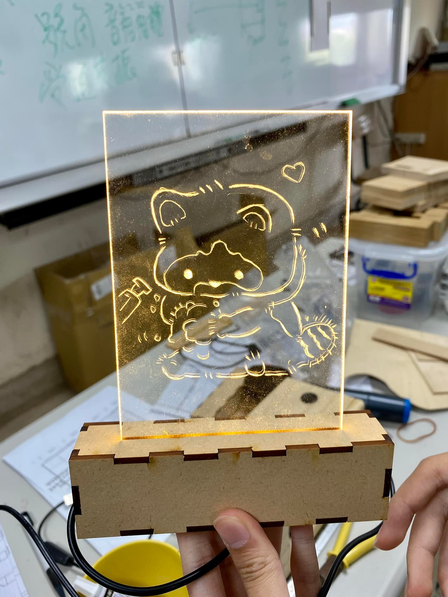
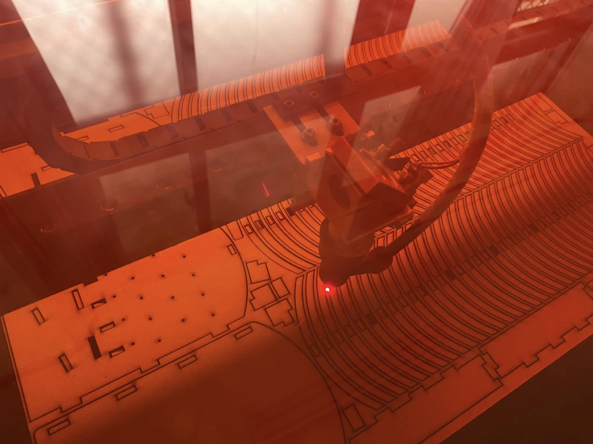
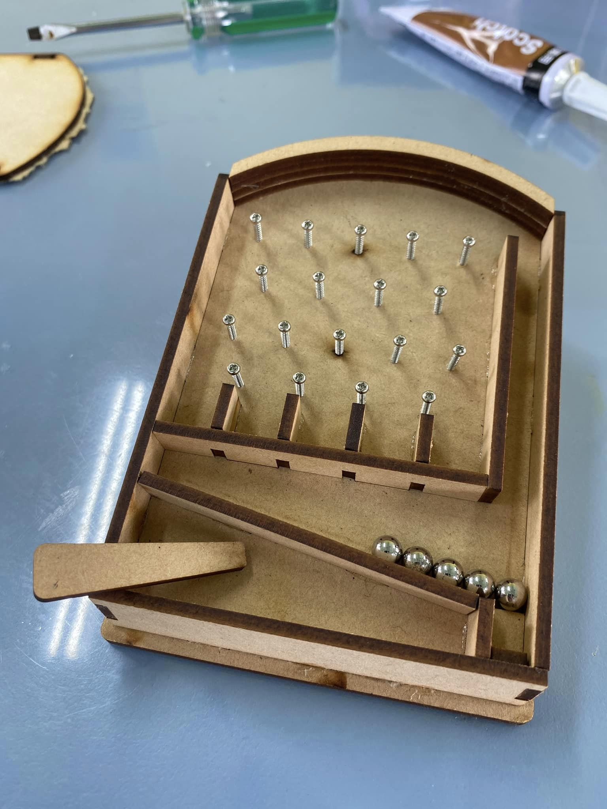
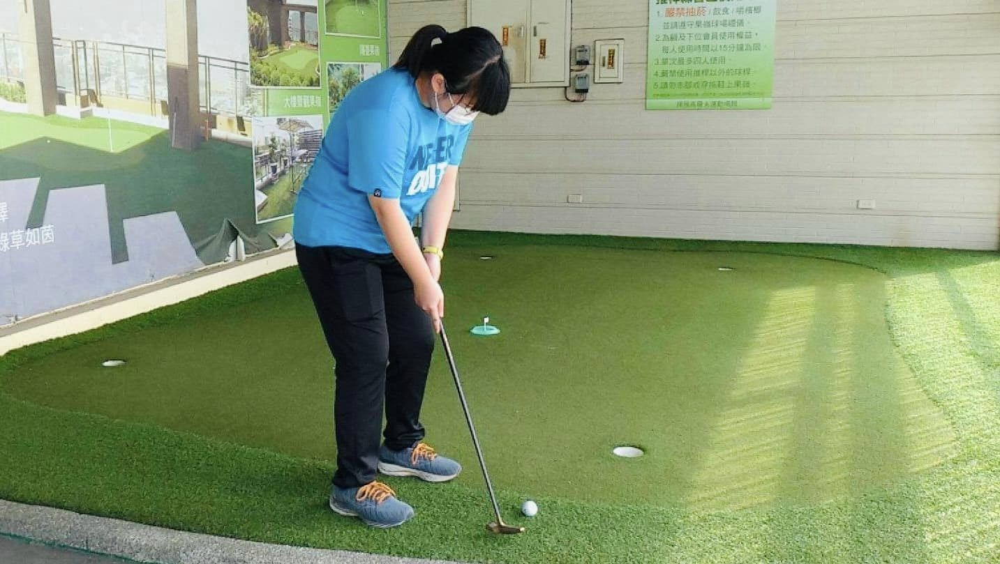
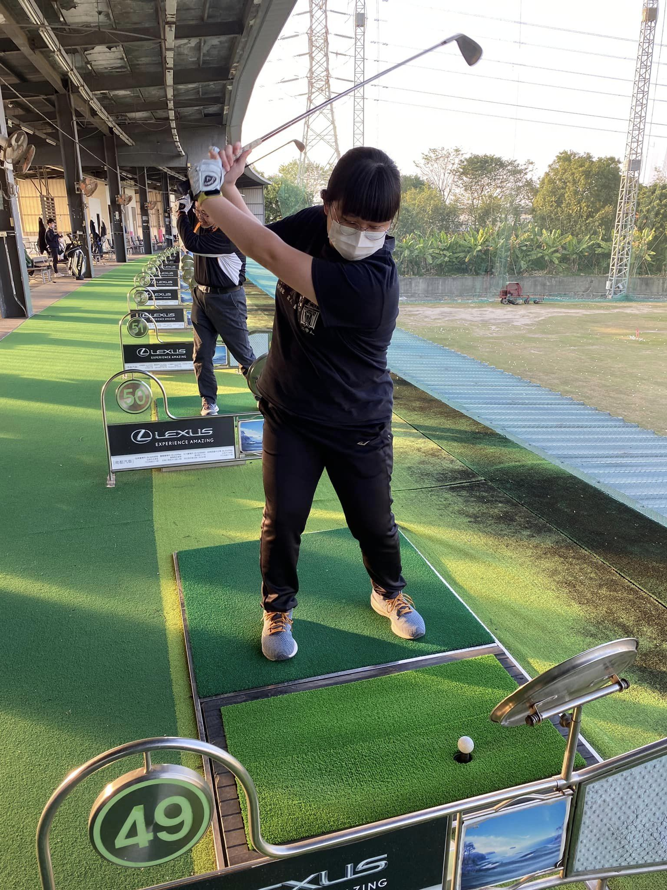

N T T U
姜佳欣 Chiang_jia_xin👧
學歷Education
2023-
國立臺東大學 應用數學系
National Taitung University Department of Applied Mathematics
2020-2023
國立臺南第二高級中學
National Tainan No. 2 Senior High School
2017-2020
臺南市立和順國民中學
Tainan Municipal Heshun National Middle School
2015-2017
臺南市安南區和順國民小學
Heshun National Elementary School, Annan District, Tainan City
2011-2015
臺南市新市區新市國民小學
Xinshi National Elementary School, Xinshi District, Tainan City
興趣interest
1.使用雷射切割繪圖研發作品



2.高爾夫球運動


3.木球運動
經歷experience
1.我很喜歡數學，曾利用函數圖形製作教師節卡片
我認為數學不應該只是一個死板板的考試學科，我嘗試和一些同學討論要怎麼把數學融入在活動當中，讓數學變得更有趣，改變大家對於數學的刻板印象，在教師節活動，我們利用數學函數圖形設計相關活動與教師節卡片一起慶祝教師節。


2.曾參加全國探究實作年會成果分享，獲佳績
我們以「不同種類的添加物對酵母菌發酵作用的影響」為主題進行研究與分享，過程中學到了不少報告的技巧，其中教授也提醒我們在化學實驗中常疏忽的細節。
.jpg )
聯絡信箱：11204108@gm.nttu.edu.tw
since 2023 ©